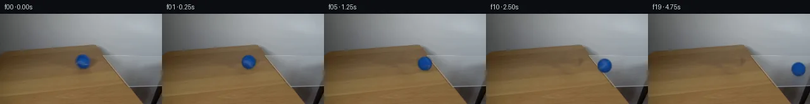

![首帧]()

Round 00
2026-11-04T21:25:53.437760+00:00像素候选变化代码 +190/−0inspection 更新
pixels e04077465f62079b · code 227634d490ee82b1
查看本轮 generate.py 真实 diff
--- previous/generate.py
+++ current/generate.py
@@ -0,0 +1,190 @@
+"""Local source-image pixel reconstruction and analytic rolling-sphere rendering.
+
+No model, renderer, network, or external scene assets are used.
+"""
+from pathlib import Path
+import json
+import numpy as np
+from PIL import Image, ImageDraw
+from scipy.ndimage import gaussian_filter, map_coordinates
+from artifact_io import save
+
+ROOT = Path(__file__).resolve().parent
+SOURCE = np.asarray(Image.open(ROOT / 'first_frame.png').convert('RGB'))
+H, W = SOURCE.shape[:2]
+YY, XX = np.mgrid[:H, :W].astype(float)
+C0 = np.array([131.0, 75.8])
+RADIUS = 11.15
+
+
+def smoothstep(a, b, x):
+ v = np.clip((x-a)/(b-a), 0, 1)
+ return v*v*(3-2*v)
+
+
+def reconstruct_wood():
+ # Donor pixels come from nearby wood, aligned with the slight grain slope.
+ donor = np.stack([map_coordinates(SOURCE[..., k].astype(float),
+ [YY+2, XX-32], order=1, mode='nearest')
+ for k in range(3)], axis=-1)
+ body = ((XX-131)/15.0)**2 + ((YY-76)/14.8)**2
+ shadow = ((XX-134)/18.0)**2 + ((YY-87)/6.7)**2
+ footprint = np.minimum(body, shadow)
+ ring = (footprint > 1.05) & (footprint < 1.9) & (XX > 108) & (XX < 158)
+ # Match donor illumination with a least-squares local color plane.
+ design = np.stack([np.ones_like(XX), (XX-131)/25, (YY-78)/20], axis=-1)
+ correction = np.linalg.lstsq(design[ring], SOURCE[ring].astype(float)-donor[ring], rcond=None)[0]
+ matched = donor + design @ correction
+ alpha = 1-smoothstep(0.78, 1.35, footprint)
+ clean = SOURCE*(1-alpha[..., None])+matched*alpha[..., None]
+ return np.clip(clean, 0, 255)
+
+
+BACKGROUND = reconstruct_wood()
+
+
+def sphere_light(nx, ny, nz):
+ return 0.56 + 0.38*nz - 0.15*ny + 0.04*nx
+
+
+# Recover photographic surface color after separating background and lighting.
+sx = (XX-C0[0])/RADIUS
+sy = (YY-C0[1])/RADIUS
+sr = np.sqrt(sx*sx+sy*sy)
+source_alpha = 1-smoothstep(0.89, 1.13, sr)
+source_z = np.sqrt(np.maximum(0, 1-sx*sx-sy*sy))
+isolated = (SOURCE.astype(float)-BACKGROUND*(1-source_alpha[..., None])) / np.maximum(source_alpha[..., None], 0.18)
+SOURCE_ALBEDO = np.clip(isolated/np.maximum(sphere_light(sx, sy, source_z)[..., None], 0.45), [7, 28, 61], [90, 145, 215])
+
+# Normal to the horizontal glass plane in camera coordinates. The local axis
+# is perpendicular to both the plane normal and the direction of travel.
+NORMAL = np.array([0.0, -0.73, np.sqrt(1-0.73**2)])
+TRAVEL = np.array([22.4, 2.6, 2.6*0.73/NORMAL[2]])
+AXIS = np.cross(NORMAL, TRAVEL)
+AXIS /= np.linalg.norm(AXIS)
+OMEGA = np.linalg.norm(TRAVEL)/RADIUS
+
+
+def surface_color(nx, ny, nz, angle):
+ normals = np.stack([nx, ny, nz], axis=-1)
+ # Inverse Rodrigues rotation brings each visible normal into material space.
+ ca, sa = np.cos(angle), np.sin(angle)
+ material = normals*ca - np.cross(AXIS, normals)*sa + (normals @ AXIS)[..., None]*AXIS*(1-ca)
+ mx, my, mz = material[..., 0], material[..., 1], material[..., 2]
+ longitude = np.arctan2(mx, mz)
+ seam_latitude = 0.21 + 0.17*np.sin(2*longitude) + 0.06*np.cos(3*longitude)
+ seam = np.exp(-((my-seam_latitude)/0.077)**2)
+ # The unseen side is completed locally with muted blue felt and a seam.
+ fuzz = 1.6*np.sin(69*mx+31*my+24*mz)*np.sin(41*my-39*mz)
+ procedural = np.array([17., 72., 151.]) + seam[..., None]*np.array([27., 28., 25.]) + fuzz[..., None]
+ photo = np.stack([map_coordinates(SOURCE_ALBEDO[..., k],
+ [C0[1]+RADIUS*my, C0[0]+RADIUS*mx],
+ order=1, mode='nearest') for k in range(3)], axis=-1)
+ known = smoothstep(0.25, 0.62, mz)
+ albedo = photo*known[..., None]+procedural*(1-known[..., None])
+ return np.clip(albedo*sphere_light(nx, ny, nz)[..., None], 0, 255)
+
+
… diff truncated; 103 more lines …